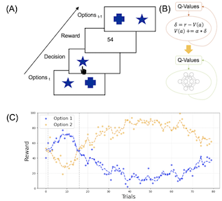

|
Yifei Cao
I'm a PhD student in psychology at UC Davis in Davis, California, where I am supervised by Professor Erie Boorman in Learning and Decision Making Lab and Maria Eckstein in Google DeepMind. My PhD research focuses on the formation and navigation of human cognitive map, computational modeling of reinforvement learning process, and building artificial neural networks learn and decide like humans.
Before coming to UC Davis, I earned my Master degree from ETH Zurich University of Zurich, majored in Interdisciplinary Brain Sciences. In Zurich, I have worked with Professor Valerio Mante, Phillipe Tobler, and Silvia Brem on human reinforcement learning and decision making process. During my time in China, I worked with Professor Gui Xue to investigate the latent cognitive and neural factors contribute to human intelligence.
Email /
CV /
Bio /
Scholar /
Twitter /
Bluesky /
Github
|

|
Research
I am interested in the neural and computational process underlying human learning and decision making. Some papers are highlighted.
|
|

|
Hybrid Neural-Cognitive Models Reveal Flexible Context-Dependent Information Processing in Reversal Learning
Yifei Cao,
Maria Eckstein
Under Review, 2025
supplement / bibtex
Hybrid cognitive and neural network modeling reveal the context-dependent value updating function exist in human flexible learning process.
|
|
|
A position coding model that accounts for the effects of event boundaries on temporal order memory
Xiaojing Peng,
Yifei Cao,
Jintao Sheng,
Yu Zhou,
Huinan Hu
Gui Xue
Cognitive Psychology, 2025
bibtex /
"smoothing" code
We modeled human temporal memory with computational models.
|

|
The neural representations underlying asymmetric cross-modal prediction of words
Liang Shi,
Chuqi Liu,
Xiaojing Peng,
Yifei Cao,
Daniel A. Levy
Gui Xue
Human Brain Mapping, 2023
bibtex /
"smoothing" code
We investigated the representations of sequence memory in human brain.
|

|
Effortful and effortless training of executive functions improve brain multiple demand system activities differently: an activation likelihood estimation meta-analysis of functional neuroimaging studies
Chan Tang,
Ting Huang,
Jipeng Huang,
Nuo Xu,
Yuan Wang,
Yifei Cao
Frontiers in Neuroscience, 2023
bibtex /
"smoothing" code
Using ALE analysis on fMRI results, we synthesized neuroimaging results from over 50 studies to reveal that effortful and effortless training have different effects on human multi-demand brain system.
|

|
Effects and moderators of computer-based training on children's executive functions: a systematic review and meta-analysis
Yifei Cao,
Ting Huang,
Jipeng Huang,
Xiaochun Xie,
Yuan Wang,
Frontiers in Psychology, 2020
bibtex /
"smoothing" code
We investigated whether adding game elements into cognitive training programs improve the effects of the intervention on children's executive functions.
|
|